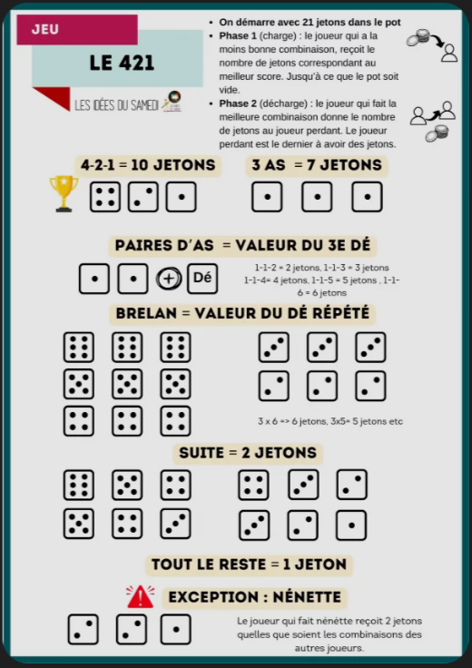
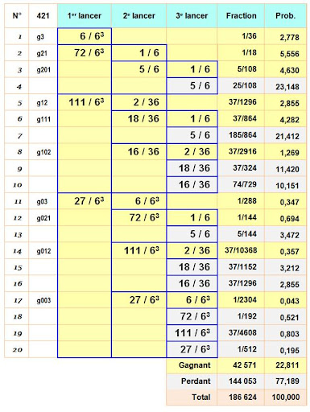

SAE 1.01 : Jeu 421 avec IA
Académique

Contexte du projet
Ce projet a été réalisé dans le cadre de ma première SAÉ du BUT Informatique, en début de formation.
L’objectif était de développer une version jouable du jeu de 421, en implémentant :
- les règles du jeu
- un système de tours et de lancers de dés
- une ou plusieurs intelligences artificielles capables de jouer automatiquement
Le projet se déroulait en Java, uniquement en console, avec un fort accent mis sur la programmation orientée objet (POO), que nous découvrions à ce moment-là.
Une partie importante du projet reposait également sur l’utilisation de probabilités, afin de permettre à l’IA de prendre des décisions optimisées (relancer ou non certains dés en fonction des chances de réussite).
Le développement s’est fait de manière progressive, avec une amélioration continue des comportements de l’IA.
Contribution personnelle
J’ai principalement travaillé sur le développement du moteur de jeu, en implémentant les règles du 421 ainsi que la gestion des différentes phases de jeu (lancers, scores, conditions de victoire).
J’ai également conçu et amélioré l’algorithme de l’intelligence artificielle, en m’appuyant sur des calculs de probabilités pour optimiser ses décisions. Cela impliquait de déterminer les meilleures stratégies possibles en fonction des combinaisons de dés obtenues.
Enfin, j’ai participé à la structuration du code en programmation orientée objet, en organisant les différentes classes pour rendre le programme plus lisible et évolutif.
Ce que j’ai appris
Ce projet a été une introduction importante au développement informatique, notamment à la programmation orientée objet.
J’ai appris à analyser un problème et le modéliser sous forme de classes et d’interactions, ce qui correspond aux bases du développement d’applications. J’ai également découvert l’importance de structurer son code de manière claire et maintenable dès les premières étapes d’un projet.
La conception de l’IA m’a permis de travailler sur des problématiques algorithmiques, en utilisant des probabilités pour améliorer la prise de décision. Cela m’a aidé à comprendre comment adapter une solution algorithmique à un problème donné et à optimiser progressivement son comportement.
Le projet m’a également sensibilisé à l’importance de la validation du programme, notamment à travers des tests et des vérifications régulières pour s’assurer du bon fonctionnement du jeu et de l’IA.
Enfin, étant l’un de mes premiers projets en informatique, cette SAÉ m’a permis de poser des bases solides en logique de programmation, rigueur et méthodologie de développement.
Traces du projet

